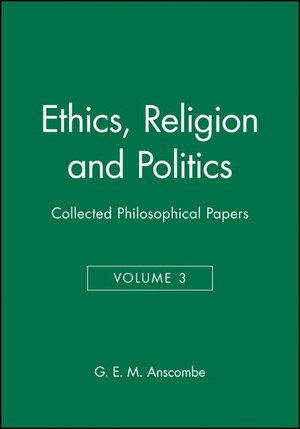

36:13 · 3 OPERE
G .E .M. Anscombe e la laurea honoris causa ad Henry Truman
Il filo del discorso
Il contributo presenta la protesta di Elizabeth Anscombe contro il conferimento a Harry S. Truman di una laurea honoris causa a Oxford come esempio di indipendenza del pensiero. Il relatore traduce e commenta vari passi di Mr. Truman’s Degree, insistendo sulla responsabilità di chi decide l’uccisione intenzionale dei non combattenti e sul significato morale di un riconoscimento pubblico. La lettura è intervallata da una lunga ricostruzione della guerra: la lettera Einstein–Roosevelt, il progetto Manhattan, Hiroshima e Nagasaki, la resa giapponese e i bombardamenti delle città europee. Questi interventi personali sono distinti dalle parole di Anscombe e dalle questioni storiche ancora discusse. Il centro filosofico è il rifiuto di giustificare qualunque mezzo attraverso un risultato ritenuto vantaggioso. Il richiamo a una testimonianza olandese sulle inondazioni di guerra amplia la domanda su quali vittime vengano ricordate. La parte conclusiva torna all’università, al rapporto fra autorevolezza e potere e alla possibilità di dissentire anche da una maggioranza. Il relatore collega poi il tema alla minaccia nucleare. Le note precisano nomi, cronologia, fonti e limiti delle analogie: il giudizio morale espresso da Anscombe e dal relatore non viene presentato come una sentenza giudiziaria contro Truman.
I libri nel discorso

Mr. Truman’s Degree
Identificazione probabile
Raccolta: Ethics, Religion and Politics, volume 3: Copertina della raccolta Ethics, Religion and Politics, Collected Philosophical Papers, volume 3, Blackwell 1981, 176 pagine; il saggio è alle pagine 62–71.
Copertina autentica della raccolta Blackwell del 1981, verificata sul catalogo Wiley e sull’indice. Non è la copertina autonoma dell’opuscolo del 1956 e non stabilisce l’edizione letta dal relatore.
Numerosi passi tradotti e la protesta contro la laurea di Truman identificano Mr. Truman’s Degree. Titolo inglese non pronunciato con chiarezza; attribuzione bibliografica probabile ma riscontrata sul testo e sull’indice editoriale.
Passaggio 4:39 ↗ · Fonti e libro ↗
Lettera a Franklin D. Roosevelt del 2 agosto 1939
Prima pagina della lettera: Lettera del 2 agosto 1939; prima pagina riprodotta nel dossier didattico della FDR Presidential Library, p. 123 del PDF.
Riproduzione autentica della prima pagina della lettera, con intestazione e apparato del dossier didattico FDR Library. Riproduzione della pagina 123 del documento; l’immagine non mostra l’intero documento. La risposta di Roosevelt appartiene a un documento distinto e successivo. Nessuna edizione o copia visibile nel filmato è stata identificata.
Lettera a Roosevelt redatta da Szilárd e firmata da Einstein ricordata nel contesto delle origini della ricerca atomica; riscontro nella lettera del 2 agosto 1939.
Passaggio 5:42 ↗ · Fonti e libro ↗
Bhagavadgītā
Copertina: Adelphi, gli Adelphi 29, 1991; a cura di Anne-Marie Esnoul, traduzione di Bianca Candian.
Immagine autentica dell’opera, controllata visivamente; l’edizione di riferimento non è attribuita al filmato.
Bhagavadgītā nominata nel richiamo alla frase di Oppenheimer sulla distruzione dei mondi.
Passaggio 10:10 ↗ · Fonti e libro ↗